Récit graphique
L'histoire, en planches.
Comment l'idée est venue, un soir, devant un bouton — et comment le monde y réagit, de l'incompréhension à l'acceptation. À lire dans l'ordre, de haut en bas.
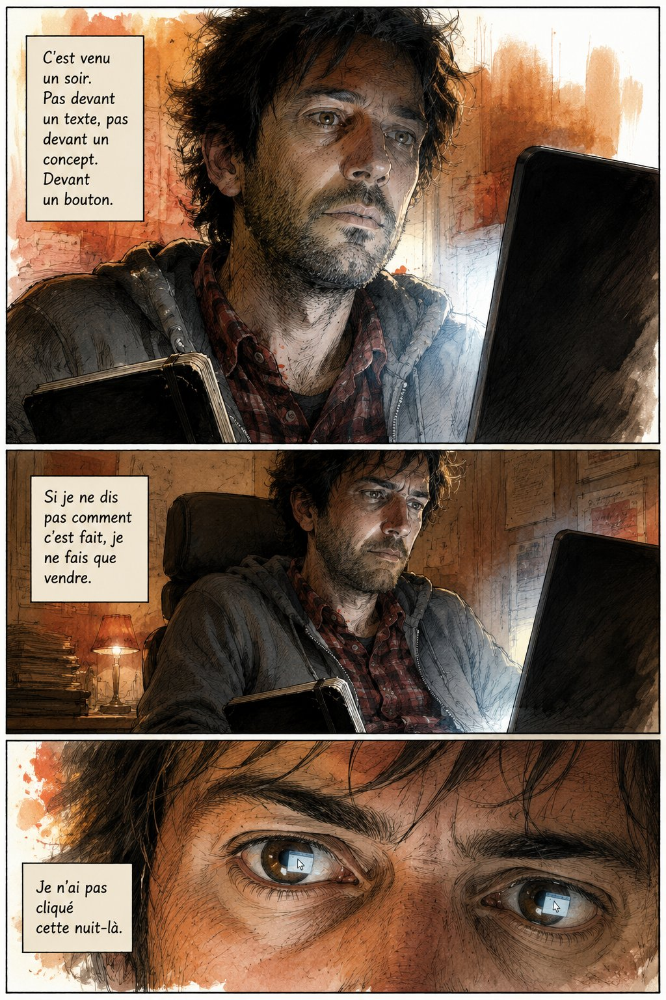
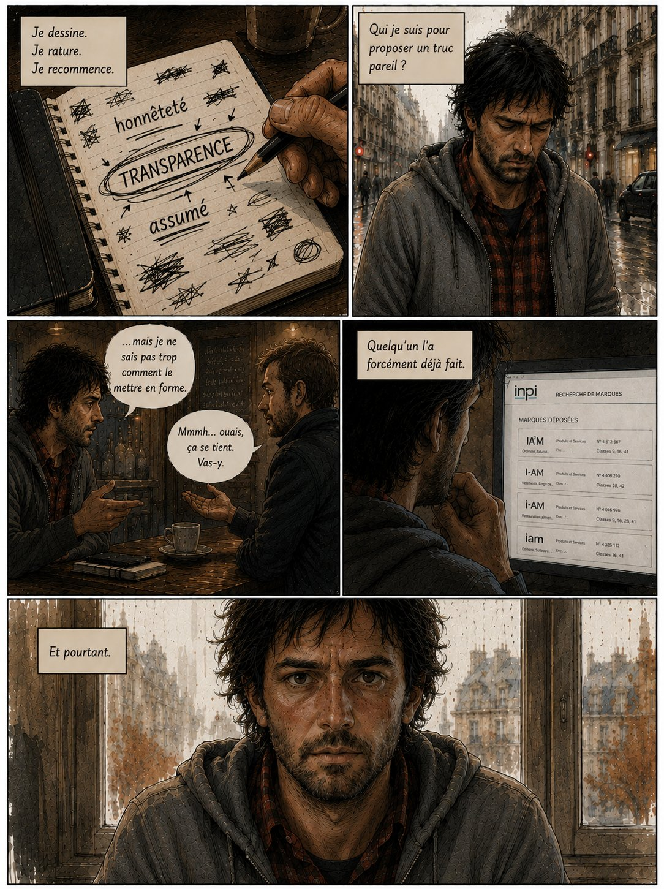
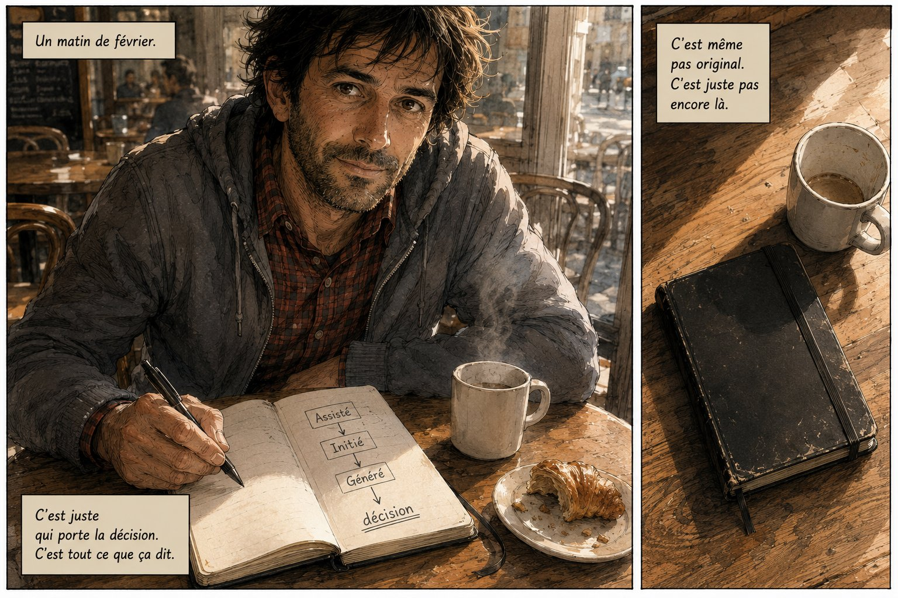
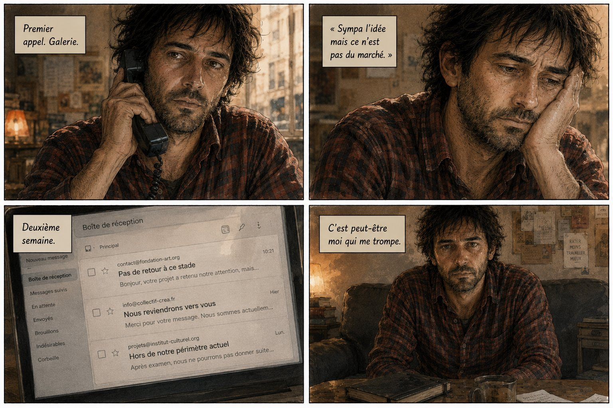
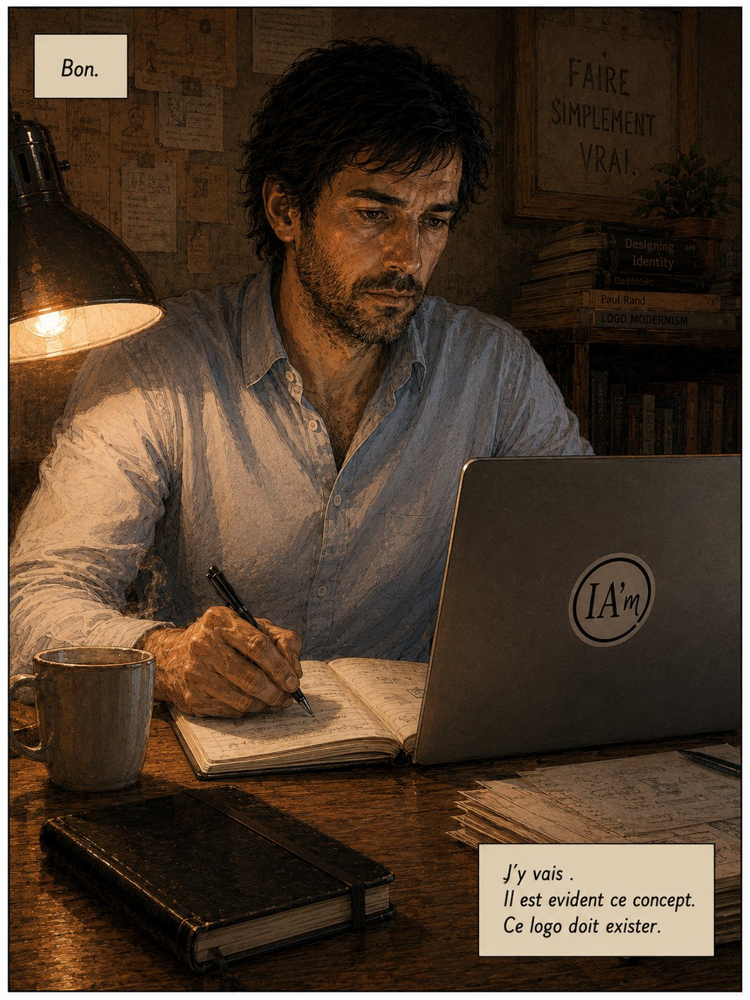
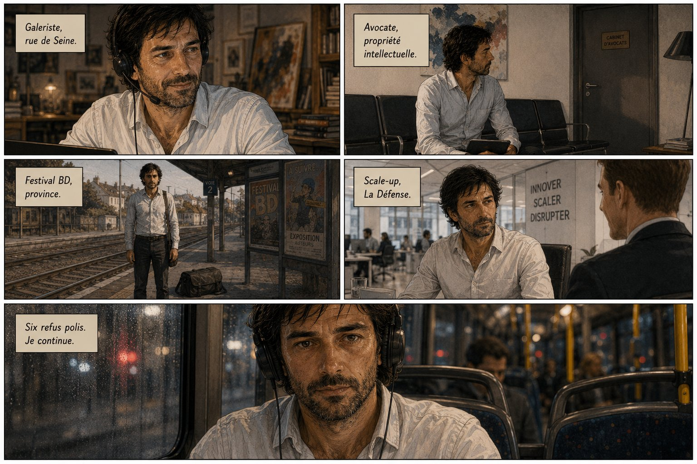
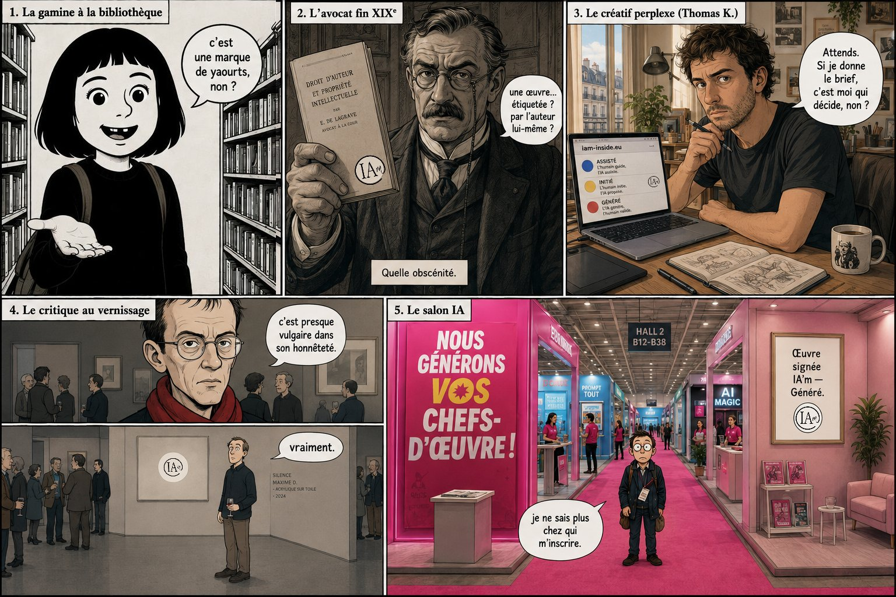
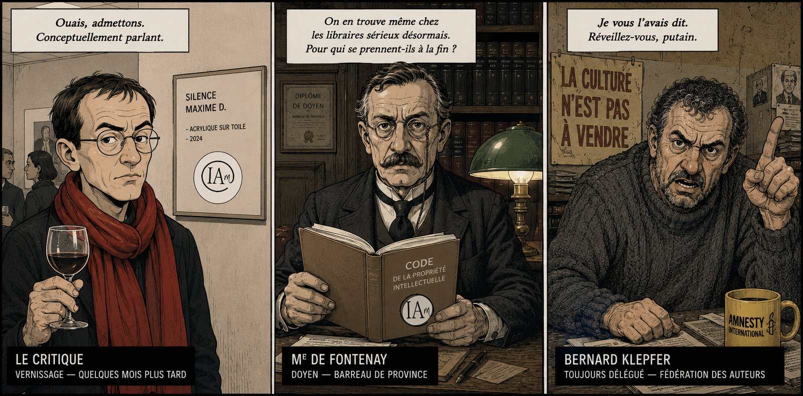
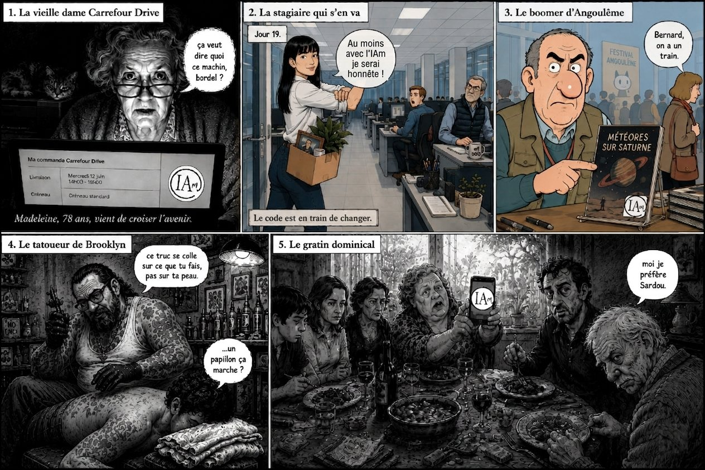
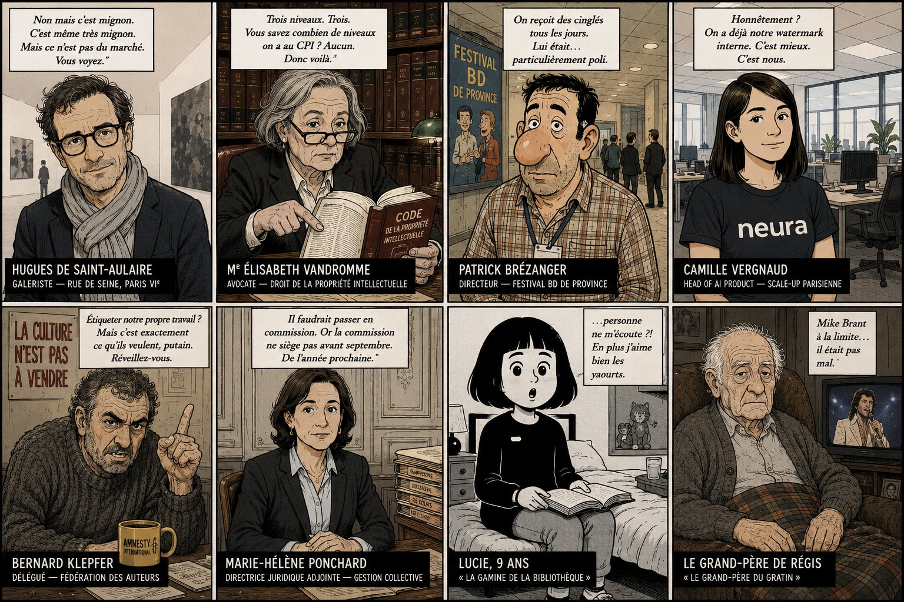
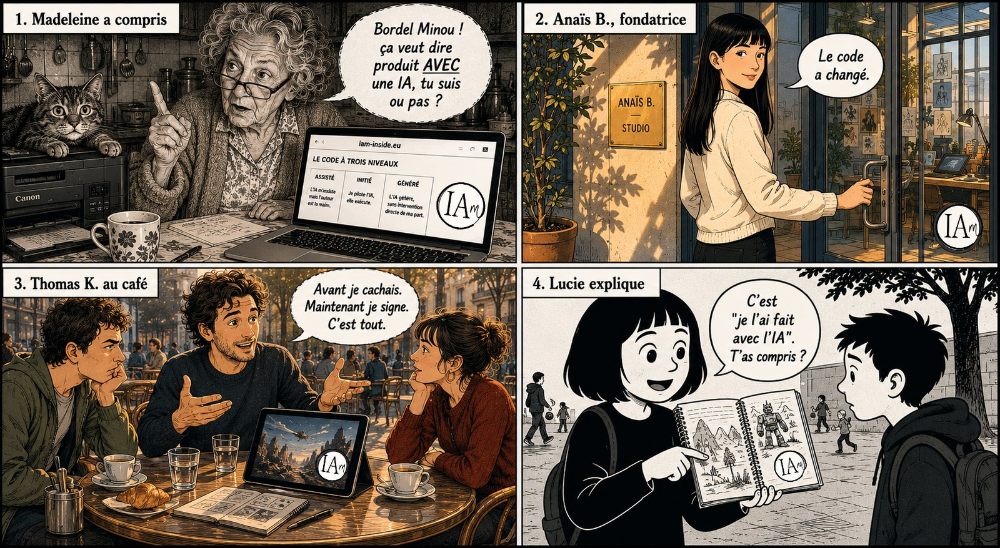
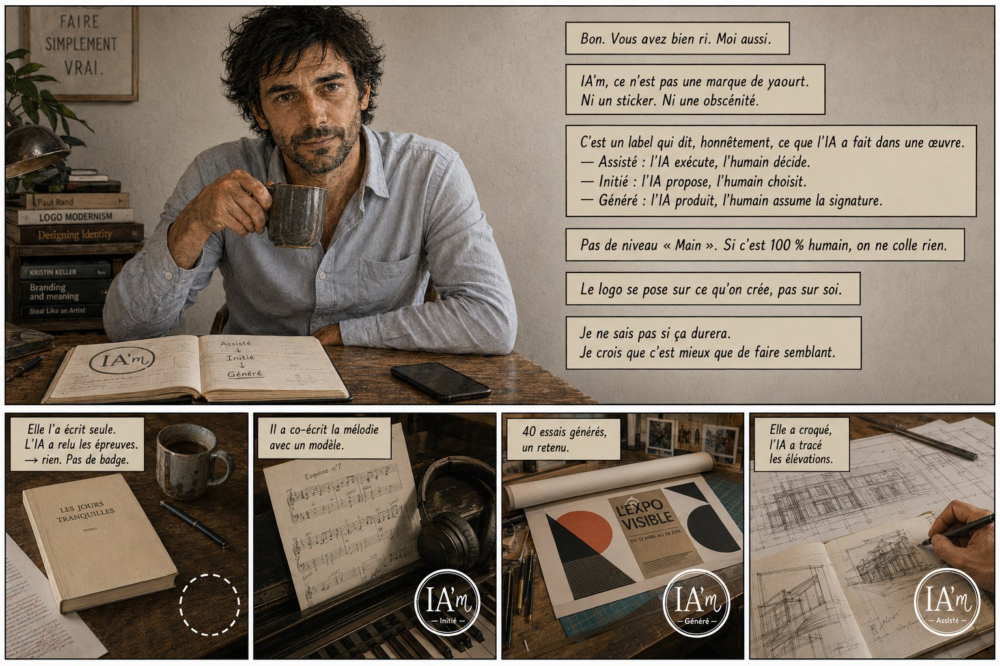